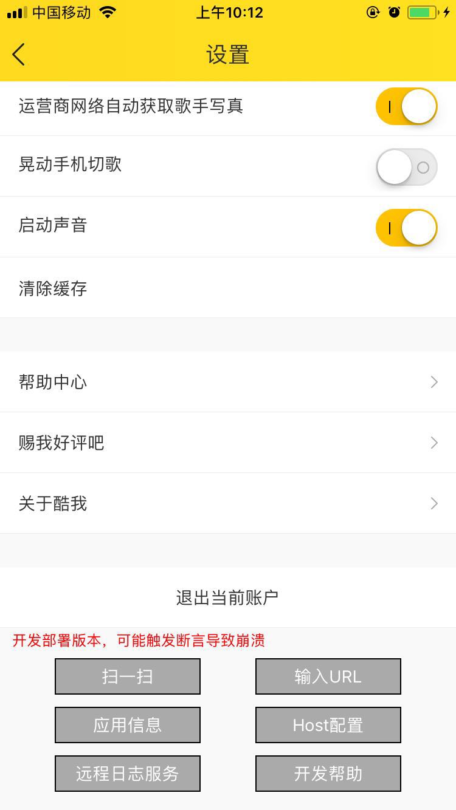
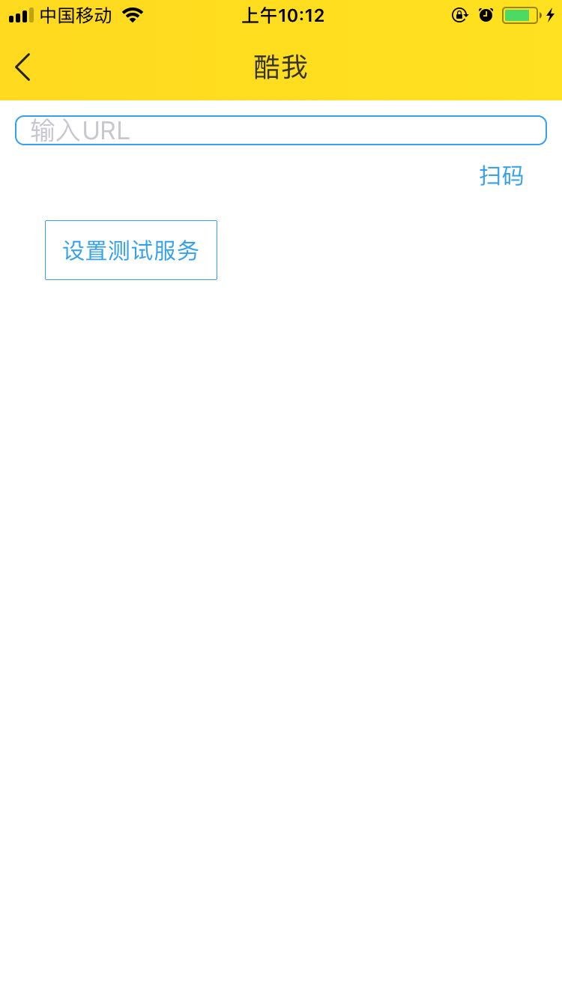

模块
共包括三个模块: 日志验收模块(/) 调试日志模块(/debug) 网络监控模块(/network)
日志验收模块功能介绍 -- (从左侧开始)
- 日志过滤功能 只显示包含制定字符的日志 点击 "Filter"开始过滤 如果关键字为空则关闭过滤功能
- 字段随机色功能 为制定的一个或多个字段添加随机背景色 点击 "Colorize" 生效
- 清空当前日志显示
- 显示所有日志详情, 为了简化显示, 默认过滤了大量字段, 点击"Detail"可以显示这些字段
- 手机端过滤功能 在开始接受日志后, 会将当前所有连接的手机ip显示在列表中, 可以通过选择一个或多个ip来实现手机端过滤功能
开启教程---开发版本
侧边栏->设置页面(底部)->远程日志服务->扫码或者手动输入地址->点击设置测试服务确认开启
开启教程---线上版本
侧边栏->设置页面(底部)->长按调出后门->remotelog->扫码或者手动输入地址->点击设置测试服务确认开启
如果remotelog不能识别, 请暂时使用开发版本
